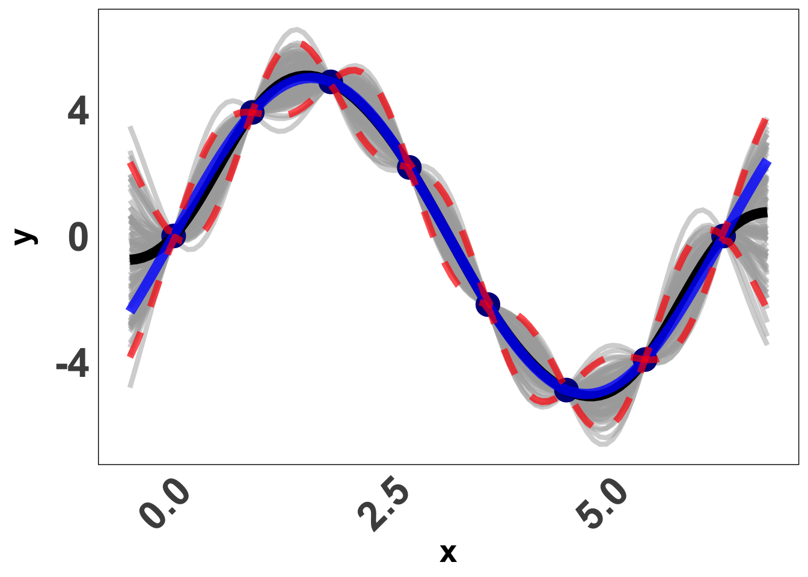
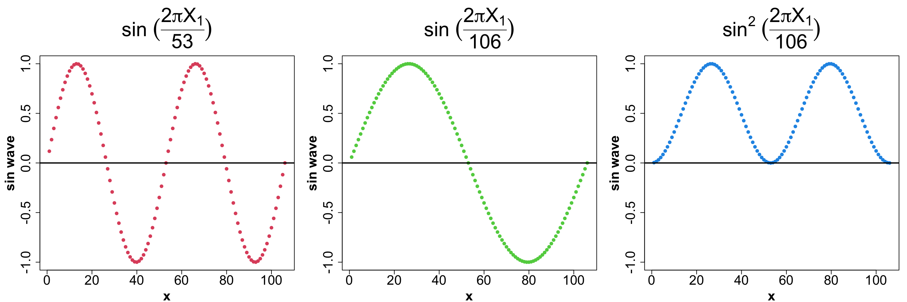
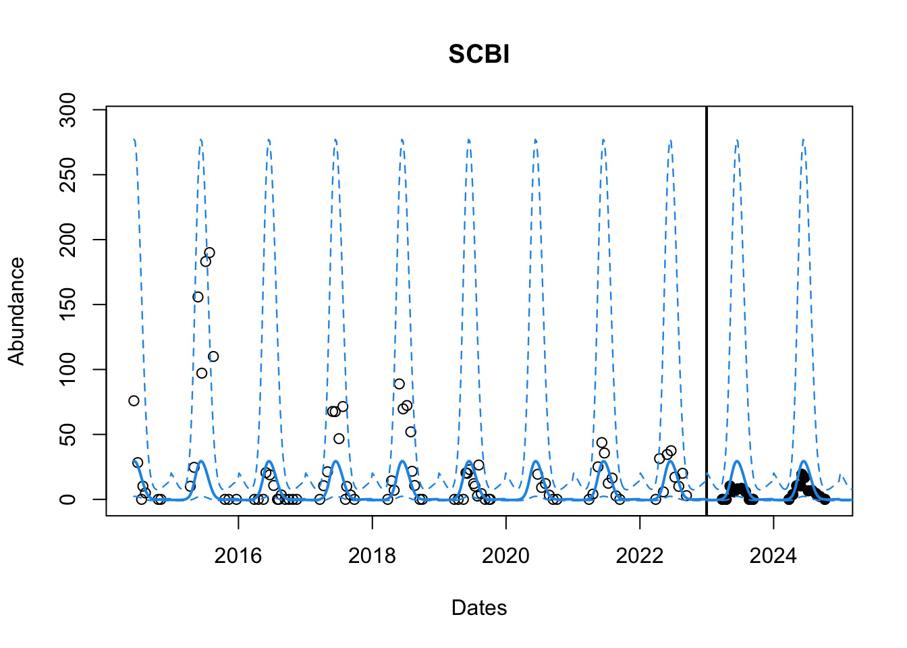
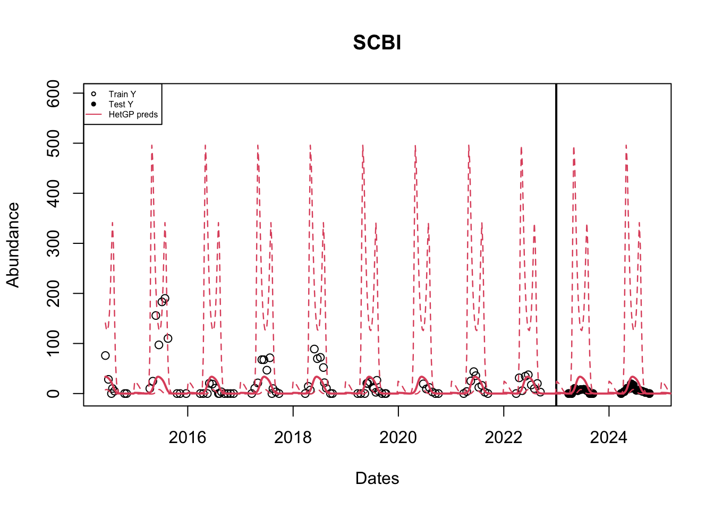
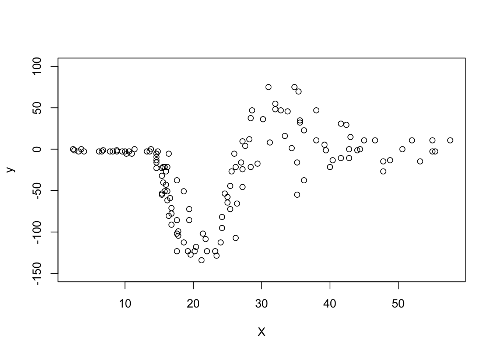

library(mvtnorm)
library(laGP)
library(hetGP)
library(ggplot2)
library(MASS)Introduction to Gaussian Processes for Time Dependent Data (Practical)
Objectives
This practical will lead you through fitting a few versions of GPs using two R packages: laGP (Gramacy 2016) and hetGP (Binois and Gramacy 2021). We will begin with a toy example from the lecture and then move on to a real data example to forecast tick abundances for a NEON site.
Basics: Fitting a GP Model
Here’s our function from before: Y(x) = 5 \sin(x) Now, let’s learn how we actually use the library laGP to fit a GP and make predictions at new locations. Let’s begin by loading some libraries
Now we create the data for our example. (X, y) is our given data,
# number of data points
n <- 8
# Inputs - between 0 and 2pi
X <- matrix(seq(0, 2*pi, length= n), ncol=1)
# Creating the response using the formula
y <- 5*sin(X)First we use the newGP function to fit our GP. In this function, we need to pass in our inputs, outputs and any known parameters. If we do not know parameters, we can pass in some prior information we know about the parameters (which we will learn shortly) so that calculating the MLE is easier. Here, X indicates the input which must be a matrix, Z is used for response which is a vector, d is used for \theta (length-scale), a scalar, which we assume to be known and equal to 1 and g is the nugget effect which is also a scalar. We pass in a very small value for numeric stability.
# Fitting GP
gpi <- newGP(X = X, Z = y, d = 1, g = sqrt(.Machine$double.eps))Now we have fit the GP and if you print gpi it only outputs a number. This is because it assigns a number to the model as a reference but has everything stored within it. We needn’t get into the details of this in this tutorial. We can assume that our model is stored in gpi and all we see is the reference number.
We will use XX as our predictive set i.e. we want to make predictions at those input locations. I have created this as a vector of 100 points between -0.5 and 2 \pi + 0.5. We are essentially using 8 data points to make predictions at 100 points. Let’s see how we do. We make use of the predGP function.
We need to pass our GP object as gpi = gpi (in our case) and the predictive input locations XX = XX for this.
# Predictions
# Creating a prediction set: sequence from -0.5 to 2*pi + 0.5 with 100 evenly spaced points
XX <- matrix(seq(-0.5, 2*pi + 0.5, length= 100), ncol=1)
# Using the function to make predictions using our gpi object
yy <- predGP(gpi = gpi, XX = XX)
# This will tell us the results that we have stored.
names(yy)[1] "mean" "Sigma" "df" "llik" names(yy) will tell us what is stored in yy. As we can see, we have the mean i.e. the mean predictions \mu and, Sigma i.e. the covariance matrix \Sigma.
Now we can draw 100 random draws using the mean and variance matrix we obtained. We will also obtain the confidence bounds as shown below:
# Since our posterior is a distribution, we take 100 samples from this.
YY <- rmvnorm (100, yy$mean, yy$Sigma)
# We calculate the 95% bounds
q1 <- yy$mean + qnorm(0.025, 0, sqrt(diag(yy$Sigma)))
q2 <- yy$mean + qnorm(0.975, 0, sqrt(diag(yy$Sigma))) Now, we will plot the mean prediction and the bounds along with each of our 100 draws.
# Now for the plot
df <- data.frame(
XX = rep(XX, each = 100),
YY = as.vector(YY),
Line = factor(rep(1:100, 100))
)
ggplot() +
# Plotting all 100 draws from our distribution
geom_line(aes(x = df$XX, y = df$YY, group = df$Line), color = "darkgray", alpha = 0.5,
linewidth =1.5) +
# Plotting our data points
geom_point(aes(x = X, y = y), shape = 20, size = 10, color = "darkblue") +
# Plotting the mean from our 100 draws
geom_line(aes(x = XX, y = yy$mean), size = 1, linewidth =3) +
# Adding the True function
geom_line(aes(x = XX, y = 5*sin(XX)), color = "blue", linewidth =3, alpha = 0.8) +
# Adding quantiles
geom_line(aes(x = XX, y = q1), linetype = "dashed", color = "red", size = 1,
alpha = 0.7,linewidth =2) +
geom_line(aes(x = XX, y = q2), linetype = "dashed", color = "red", size = 1,
alpha = 0.7,linewidth =2) +
labs(x = "x", y = "y") +
# Setting the themes
theme_minimal() +
theme(
axis.text.x = element_text(angle = 45, hjust = 1, size = 25, face = "bold"),
axis.text.y = element_text(size = 25, face = "bold"),
axis.title.y = element_text(margin = margin(r = 10), size = 20, face = "bold"),
axis.title.x = element_text(margin = margin(r = 10), size = 20, face = "bold"),
panel.grid.major = element_blank(),
panel.grid.minor = element_blank(),
panel.background = element_rect(fill = "white"),
strip.background = element_rect(fill = "white", color = "white"),
strip.text = element_text(color = "black")) +
guides(color = "none")
Looks pretty cool.
Using GPs for data on tick abundances over time
We will try all this on a simple dataset: Tick Data from NEON Forecasting Challenge We will first learn a little bit about this dataset, followed by setting up our predictors and using them in our model to predict tick density for the future season. We will also learn how to fit a separable GP and specify priors for our parameters. Finally, we will learn some basics about a HetGP (Heteroskedastic GP) and try and fit that model as well.
Overview of the Data
Objective: Forecast tick density for 4 weeks into the future
Sites: The data is collected across 9 different sites, each plot was of size 1600m^2 using a drag cloth
Data: Sparse and irregularly spaced. We only have ~650 observations across 10 years at 9 locations
Let’s start with loading all the libraries that we will need, load our data and understand what we have.
library(tidyverse)
library(laGP)
library(ggplot2)
# Pulling the data from the NEON data base.
target <- readr::read_csv("https://data.ecoforecast.org/neon4cast-targets/ticks/ticks-targets.csv.gz", guess_max = 1e1)
# Visualizing the data
head(target)# A tibble: 6 × 5
datetime site_id variable observation iso_week
<date> <chr> <chr> <dbl> <chr>
1 2015-04-20 BLAN amblyomma_americanum 0 2015-W17
2 2015-05-11 BLAN amblyomma_americanum 9.82 2015-W20
3 2015-06-01 BLAN amblyomma_americanum 10 2015-W23
4 2015-06-08 BLAN amblyomma_americanum 19.4 2015-W24
5 2015-06-22 BLAN amblyomma_americanum 3.14 2015-W26
6 2015-07-13 BLAN amblyomma_americanum 3.66 2015-W29Initial Setup
For a GP model, we assume the response (Y) should be normally distributed.
Since tick density, our response, must be greater than 0, we need to use a transform.
The following is the most suitable transform for our application:
\begin{equation} \begin{aligned} f(y) & = \log (y + 1) \\[2pt] \end{aligned} \end{equation}
We pass in (response + 1) into this function to ensure we don’t take a log of 0. We will adjust this in our back transform.
Let’s write a function for this, as well as the inverse of the transform.
# transforms y
f <- function(x) {
y <- log(x + 1)
return(y)
}
# This function back transforms the input argument
fi <- function(y) {
x <- exp(y) - 1
return(x)
}Predictors
- The goal is to forecast tick populations for a season so our response (Y) here, is the tick density. However, we do not have a traditional data set with an obvious input space. What is the X?
We made a few plots earlier to help us identify what can be useful:
X_1 Iso-week: This is the iso-week number
Let’s convert the iso-week from our target dataset as a numeric i.e. a number. Here is a function to do the same.
# This function tells us the iso-week number given the date
fx.iso_week <- function(datetime){
# Gives ISO-week in the format yyyy-w## and we extract the ##
x1 <- as.numeric(stringr::str_sub(ISOweek::ISOweek(datetime), 7, 8)) # find iso week #
return(x1)
}
target$week <- fx.iso_week(target$datetime)
head(target)# A tibble: 6 × 6
datetime site_id variable observation iso_week week
<date> <chr> <chr> <dbl> <chr> <dbl>
1 2015-04-20 BLAN amblyomma_americanum 0 2015-W17 17
2 2015-05-11 BLAN amblyomma_americanum 9.82 2015-W20 20
3 2015-06-01 BLAN amblyomma_americanum 10 2015-W23 23
4 2015-06-08 BLAN amblyomma_americanum 19.4 2015-W24 24
5 2015-06-22 BLAN amblyomma_americanum 3.14 2015-W26 26
6 2015-07-13 BLAN amblyomma_americanum 3.66 2015-W29 29- X_2 Sine wave: We use this to give our model phases. We can consider this as a proxy to some other variables such as temperature which would increase from Jan to about Jun-July and then decrease. We use the following sin wave
X_2 = \left( \text{sin} \ \left( \frac{2 \ \pi \ X_1}{106} \right) \right)^2 where, X_1 is the iso-week.
Usually, a Sin wave for a year would have the periodicity of 53 to indicate 53 weeks. Why have we chosen 106 as our period? And we do we square it?
Let’s use a visual to understand that.
x <- c(1:106)
sin_53 <- sin(2*pi*x/53)
sin_106 <- (sin(2*pi*x/106))
sin_106_2 <- (sin(2*pi*x/106))^2
par(mfrow=c(1, 3), mar = c(4, 5, 7, 1), cex.axis = 2, cex.lab = 2, cex.main = 3, font.lab = 2)
plot(x, sin_53, col = 2, pch = 19, ylim = c(-1, 1), ylab = "sin wave",
main = expression(paste(sin, " ", (frac(2 * pi * X[1], 53)))))
abline(h = 0, lwd = 2)
plot(x, sin_106, col = 3, pch = 19, ylim = c(-1, 1), ylab = "sin wave",
main = expression(paste(sin, " ", (frac(2 * pi * X[1], 106)))))
abline(h = 0, lwd = 2)
plot(x, sin_106_2, col = 4, pch = 19, ylim = c(-1, 1), ylab = "sin wave",
main = expression(paste(sin^2, " ", (frac(2 * pi * X[1], 106)))))
abline(h = 0, lwd = 2)
Some observations:
The sin wave (period 53) goes increases from (0, 1) and decreases all the way to -1 before coming back to 0, all within the 53 weeks in the year. But this is not what we want to achieve.
We want the function to increase from Jan - Jun and then start decreasing till Dec. This means, we need a regular sin-wave to span 2 years so we can see this.
We also want the next year to repeat the same pattern i.e. we want to restrict it to [0, 1] interval. Thus, we square the sin wave.
fx.sin <- function(datetime, f1 = fx.iso_week){
# identify iso week#
x <- f1(datetime)
# calculate sin value for that week
x2 <- (sin(2*pi*x/106))^2
return(x2)
}For a GP, it’s also useful to ensure that all our X’s are between 0 and 1. Usually this is done by using the following method
X_i^* = \frac{X_i - \min(X)}{\max(X) - \min(X) } where X = (X_1, X_2 ...X_n)
X^* = (X_1^*, X_2^* ... X_n^*) will be the standarized X’s with all X_i^* in the interval [0, 1].
We can either write a function for this, or in our case, we can just divide Iso-week by 53 since that would result effectively be the same. Our Sin Predictor already lies in the interval [0, 1].
Model Fitting
Now, let’s start with modelling. We will start with one random location out of the 9 locations.
# Choose a random site number: Anything between 1-9.
site_number <- 6
# Obtaining site name
site_names <- unique(target$site_id)
# Subsetting all the data at that location
df <- subset(target, target$site_id == site_names[site_number])
head(df)# A tibble: 6 × 6
datetime site_id variable observation iso_week week
<date> <chr> <chr> <dbl> <chr> <dbl>
1 2014-06-09 SCBI amblyomma_americanum 75.9 2014-W24 24
2 2014-06-30 SCBI amblyomma_americanum 28.3 2014-W27 27
3 2014-07-21 SCBI amblyomma_americanum 0 2014-W30 30
4 2014-07-28 SCBI amblyomma_americanum 10.1 2014-W31 31
5 2014-08-11 SCBI amblyomma_americanum 4.94 2014-W33 33
6 2014-10-20 SCBI amblyomma_americanum 0 2014-W43 43We will also select only those columns that we are interested in i.e. datetime and obervation. We don’t need site since we are only using one of them.
# extracting only the datetime and obs columns
df <- df[, c("datetime", "observation")]We will use one site at first and fit a GP and make predictions. For this we first need to divide our data into a training set and a testing set. Since we have time series, we want to divide the data sequentially, i.e. we pick a date and everything before the date is our training set and after is our testing set where we check how well our model performs. We choose the date 2020-12-31.
# Selecting a date before which we consider everything as training data and after this is testing data.
cutoff = as.Date('2022-12-31')
df_train <- subset(df, df$datetime <= cutoff)
df_test <- subset(df, df$datetime > cutoff)GP Model
Now we will setup our X’s. We already have the functions to do this and can simply pass in the datetime. We then combine X_1 and X_2 to create out input matrix X. Remember, everything is ordered as in our dataset.
# Setting up iso-week and sin wave predictors by calling the functions
X1 <- fx.iso_week(df_train$datetime) # range is 1-53
X2 <- fx.sin(df_train$datetime) # range is 0 to 1
# Centering the iso-week by diving by 53
X1c <- X1/ 53
# We combine columns centered X1 and X2, into a matrix as our input space
X <- as.matrix(cbind.data.frame(X1c, X2))
head(X) X1c X2
[1,] 0.4528302 0.9782005
[2,] 0.5094340 0.9991219
[3,] 0.5660377 0.9575728
[4,] 0.5849057 0.9305218
[5,] 0.6226415 0.8587536
[6,] 0.8113208 0.3120862Next step is to tranform the response to ensure it is normal.
# Extract y: observation from our training model.
y_obs <- df_train$observation
# Transform the response
y <- f(y_obs)Now, we can use the laGP library to fit a GP. First, we specify priors using darg and garg. We will specify a minimum and maximum for our arguments. We need to pass the input space for darg and the output vector for garg. You can look into the functions using ?function in R. We set the minimum to a very small value rather than 0 to ensure numeric stability.
# A very small value for stability
eps <- sqrt(.Machine$double.eps)
# Priors for theta and g.
d <- darg(list(mle=TRUE, min =eps, max=5), X)
g <- garg(list(mle=TRUE, min = eps, max = 1), y)Now, to fit the GP, we use newGPsep. We pass the input matrix and the response vector with some values of the parameters. Then, we use the jmleGPsep function to jointly estimate \theta and g using MLE method. dK allows the GP object to store derivative information which is needed for MLE calculations. newGPsep will fit a separable GP as opposed to newGP which would fit an isotropic GP.
# Fitting a GP with our data, and some starting values for theta and g
gpi <- newGPsep(X, y, d = 0.1, g = 1, dK = T)
# Jointly infer MLE for all parameters
mle <- jmleGPsep(gpi, drange = c(d$min, d$max), grange = c(g$min, g$max),
dab = d$ab, gab= g$ab)Now, we will create a grid from the first week in our dataset to 1 year into the future, and predict on the entire time series. We use predGPsep to make predictions.
# Create a grid from start date in our data set to one year in future (so we forecast for next season)
startdate <- as.Date(min(df$datetime))# identify start week
grid_datetime <- seq.Date(startdate, Sys.Date() + 365, by = 7) # create sequence from
# Build the input space for the predictive space (All weeks from 04-2014 to 07-2025)
XXt1 <- fx.iso_week(grid_datetime)
XXt2 <- fx.sin(grid_datetime)
# Standardize
XXt1c <- XXt1/53
# Store inputs as a matrix
XXt <- as.matrix(cbind.data.frame(XXt1c, XXt2))
# Make predictions using predGP with the gp object and the predictive set
ppt <- predGPsep(gpi, XXt) Storing the mean and calculating quantiles.
# Now we store the mean as our predicted response i.e. density along with quantiles
yyt <- ppt$mean
q1t <- ppt$mean + qnorm(0.025,0,sqrt(diag(ppt$Sigma))) #lower bound
q2t <- ppt$mean + qnorm(0.975,0,sqrt(diag(ppt$Sigma))) # upper boundNow we can plot our data and predictions and see how well our model performed. We need to back transform our predictions to the original scale.
# Back transform our data to original
gp_yy <- fi(yyt)
gp_q1 <- fi(q1t)
gp_q2 <- fi(q2t)
# Plot the observed points
plot(as.Date(df$datetime), df$observation,
main = paste(site_names[site_number]), col = "black",
xlab = "Dates" , ylab = "Abundance",
# xlim = c(as.Date(min(df$datetime)), as.Date(cutoff)),
ylim = c(min(df_train$observation, gp_yy, gp_q1), max(df_train$observation, gp_yy, gp_q2)* 1.05))
# Plot the testing set data
points(as.Date(df_test$datetime), df_test$observation, col ="black", pch = 19)
# Line to indicate seperation between train and test data
abline(v = as.Date(cutoff), lwd = 2)
# Add the predicted response and the quantiles
lines(grid_datetime, gp_yy, col = 4, lwd = 2)
lines(grid_datetime, gp_q1, col = 4, lwd = 1.2, lty = 2)
lines(grid_datetime, gp_q2, col = 4, lwd = 1.2, lty =2)
That looks pretty good? We can also look at the RMSE to see how the model performs. It is better o do this on the transformed scale. We will use yyt for this. We need to find those predictions which correspond to the datetime in our testing dataset df_test.
# Obtain true observed values for testing set
yt_true <- f(df_test$observation)
# FInd corresponding predictions from our model in the grid we predicted on
yt_pred <- yyt[which(grid_datetime %in% df_test$datetime)]
# calculate RMSE
rmse <- sqrt(mean((yt_true - yt_pred)^2))
rmse[1] 0.870971HetGP Model
Next, we can attempt a hetGP. We are now interested in fitting a vector of nuggets rather than a single value.
Let’s use the same data we have to fit a hetGP. We already have our data (X, y) as well as our prediction set XXt. We use the mleHetGP command to fit a GP and pass in our data. The default covariance structure is the Squared Exponential structure. We use the predict function in base R and pass the hetGP object i.e. het_gpi to make predictions on our set XXt.
# create predictors
X1 <- fx.iso_week(df_train$datetime)
X2 <- fx.sin(df_train$datetime)
# standardize and put into matrix
X1c <- X1/53
X <- as.matrix(cbind.data.frame(X1c, X2))
# Build prediction grid (From 04-2014 to 07-2025)
XXt1 <- fx.iso_week(grid_datetime)
XXt2 <- fx.sin(grid_datetime)
# standardize and put into matrix
XXt1c <- XXt1/53
XXt <- as.matrix(cbind.data.frame(XXt1c, XXt2))
# Transform the training response
y_obs <- df_train$observation
y <- f(y_obs)
# Fit a hetGP model. X must be s matrix and nrow(X) should be same as length(y)
het_gpi <- hetGP::mleHetGP(X = X, Z = y)
# Predictions using the base R predict command with a hetGP object and new locationss
het_ppt <- predict(het_gpi, XXt)Now we obtain the mean and the confidence bounds as well as transform the data to the original scale.
# Mean density for predictive locations and Confidence bounds
het_yyt <- het_ppt$mean
het_q1t <- qnorm(0.975, het_ppt$mean, sqrt(het_ppt$sd2 + het_ppt$nugs))
het_q2t <- qnorm(0.025, het_ppt$mean, sqrt(het_ppt$sd2 + het_ppt$nugs))
# Back transforming to original scale
het_yy <- fi(het_yyt)
het_q1 <- fi(het_q1t)
het_q2 <- fi(het_q2t)We can now plot the results similar to before. [Uncomment the code lines to see how a GP vs a HetGP fits the data]
# Plot Original data
plot(as.Date(df$datetime), df$observation,
main = paste(site_names[site_number]), col = "black",
xlab = "Dates" , ylab = "Abundance",
# xlim = c(as.Date(min(df$datetime)), as.Date(cutoff)),
ylim = c(min(df_train$observation, het_yy, het_q2), max(df_train$observation, het_yy, het_q1)* 1.2))
# Add testing observations
points(as.Date(df_test$datetime), df_test$observation, col ="black", pch = 19)
# Line to indicate our cutoff point
abline(v = as.Date(cutoff), lwd = 2)
# HetGP Model mean predictions and bounds.
lines(grid_datetime, het_yy, col = 2, lwd = 2)
lines(grid_datetime, het_q1, col = 2, lwd = 1.2, lty = 2)
lines(grid_datetime, het_q2, col = 2, lwd = 1.2, lty =2)
legend("topleft", legend = c("Train Y","Test Y", "HetGP preds"),
col = c(1, 1, 2), lty = c(NA, NA, 1),
pch = c(1, 19, NA), cex = 0.5)
The mean predictions of a GP are similar to that of a hetGP; But the confidence bounds are different. A hetGP produces sligtly tighter bounds.
We can also compare the RMSE’s using the predictions of the hetGP model.
yt_true <- f(df_test$observation) # Original data
het_yt_pred <- het_yyt[which(grid_datetime %in% df_test$datetime)] # model preds
# calculate rmse for hetGP model
rmse_het <- sqrt(mean((yt_true - het_yt_pred)^2))
rmse_het[1] 0.9062104Now that we have learnt how to fit a GP and a hetGP, it’s time for a challenge.
Try a hetGP on this example.
# Your turn
X <- mcycle$time
y <- mcycle$accel
# Predict on this set
XX <- matrix(seq(0, 301, length= 200), ncol=1)
# Data visualization
plot(X, y, ylim = c(-150, 100))
# Add code to fit a hetGP model and visualise it as aboveChallenges
Now it’s your turn to try to fit a GP on your own. Here are some options:
Fit a GP Model for the location “SERC” i.e. site_number = 7 and site_number = 4
Fit a GP Model for all the locations
Hint 1: Write a function that can fit a GP and make predictions (keep it simple. Let arguments be the inputs X, response Y and predictive set XX).
Hint 2: Write a for loop where you subset the data for each location and then call the function to fit the GP.
Build altitude predictor for the testing set (Advanced).
Here is a snippet of the function to build the predictor.
site_data <- readr::read_csv(paste0("https://raw.githubusercontent.com/eco4cast/neon4cast-targets/","main/NEON_Field_Site_Metadata_20220412.csv")) |> dplyr::filter(ticks == 1)
site_data <- site_data |> dplyr:::select(field_site_id, field_mean_elevation_m)
colnames(site_data) <- c("site_id", "altitude")
# Scaling altitude between [0, 1]
site_data$altitude <- (site_data$altitude - min(site_data$altitude))/(max(site_data$altitude) - min(site_data$altitude))
fx.alt <- function(df, site_df = site_data, test_site = NULL){
if(!is.null(test_site)) df <- cbind.data.frame(df, site_id = rep(test_site, length(df)))
df <- df %>% left_join(site_df, by = "site_id")
return(df$alt)
}
df <- target[, c("datetime", "site_id", "observation")]Hints: Follow the layout
# build training set for full dataset.
x_train <-
y_train <-
## fit model (you only need to fit the model once.)
# build testing set by location and make predicions
for(i in __){
# Testing set for location (i)
x_test <-
y_test <-
# Predict by location
# store predictions, training data at this location and bounds
}
### Visualize the fits by location
for(i in 1:__){
# Plot data at location
# Plot GP model preds
}References
Binois, Mickaël, and Robert B Gramacy. 2021. “Hetgp: Heteroskedastic Gaussian Process Modeling and Sequential Design in r.” Journal of Statistical Software 98: 1–44.
Gramacy, Robert B. 2016. “laGP: Large-Scale Spatial Modeling via Local Approximate Gaussian Processes in R.” Journal of Statistical Software 72 (i01). https://doi.org/http://hdl.handle.net/10.
Citation
BibTeX citation:
@online{vijay_patil2025,
author = {Vijay Patil, Parul and R. Johnson, Leah and B. Gramacy,
Robert},
title = {Introduction to {Gaussian} {Processes} for {Time} {Dependent}
{Data} {(Practical)}},
date = {2025-05-19},
langid = {en}
}
For attribution, please cite this work as:
Vijay Patil, Parul, Leah R. Johnson, and Robert B. Gramacy. 2025.
“Introduction to Gaussian Processes for Time Dependent Data
(Practical).” May 19, 2025.